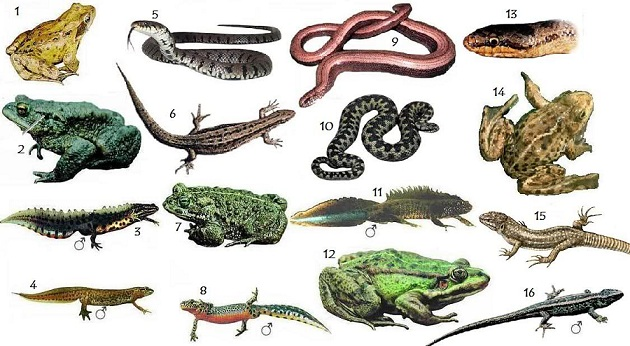

Memeliler
Memeliler, omurgalı hayvanlar arasında yer alır ve genellikle kendi sıcaklıklarını koruma yeteneğine sahiptir.

Hayvanlar alemi, dünya üzerinde çeşitli türleri içeren muazzam bir çeşitliliğe sahiptir.
Memeliler, omurgalı hayvanlar arasında yer alır ve genellikle kendi sıcaklıklarını koruma yeteneğine sahiptir.
Sürüngenler, soğukkanlı hayvanlardır ve pullarla kaplıdır. Genellikle sürüngenler karasal ortamlarda yaşarlar.
Kuşlar, tüylerle kaplı, uçabilen ve yumurtlayan omurgalı hayvanlardır. Dünya genelinde çok çeşitli türleri vardır.